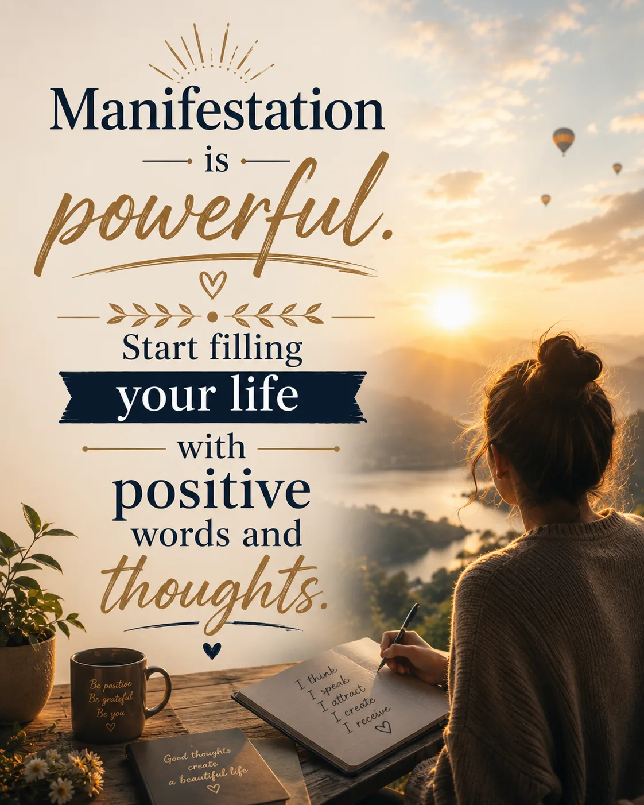

Quote Of The Day
My first blessing of the day, I woke up. If it requires me to fake a smile, I'll probably pass.


Being positive doesn't mean you need to be happy all the time. It means that even during difficult days, you trust that brighter days are on the way.
positive positivity happiness difficult days brighter days optimism hope mindset encouragement motivation resilience mental strength confidence growth


Don't wait for things to get easier, simpler, or better. Life will always be complicated. Learn to be happy right now. Otherwise, you'll run out of time.
happiness happy gratitude grateful present moment enjoy life live now positivity positive mindset joy peace contentment life lessons motivation inspiration time appreciation be present be grateful be happy
The day is coming when you'll be living the dreams you've been praying for. Stay faithful. Keep going.
faith hope dreams prayer praying breakthrough trust god believe perseverance keep going stay faithful blessings future success encouragement inspiration spiritual growth answered prayers motivation never give up
Training my mind to think wiser, respond calmer, and react better each day.
mindset self growth personal development wisdom discipline calm emotional intelligence mental strength better thinking self improvement learning growth focus resilience mindset training think wiser respond calmer react better growth mindset positive habits daily improvement stronger mind better life self mastery self control
When your intentions are genuine, you don't lose people. Those who walk away are the ones who lose someone valuable.
genuine intentions loyalty trust relationships friendship respect character integrity people value self worth healthy relationships authentic connections boundaries emotional maturity kindness loyalty trustworthiness honesty sincerity real people meaningful connections good heart valuable person personal growth emotional intelligence
You wake up knowing exactly how much time you have left to live. What is the very first thing you do?
life purpose mortality time value of time motivation priorities meaningful life legacy goals dreams personal growth self reflection mindset purpose intentional living success productivity life choices make every day count time management bucket list fulfillment purpose driven life focus on what matters urgency inspiration motivation quote
Healing doesn't erase your past. It teaches you how to move forward while carrying the lessons it left behind.
healing recovery growth resilience emotional healing moving forward life lessons self growth inner peace strength wisdom overcoming pain healing journey personal development mental health hope forgiveness learning from the past personal transformation healing process emotional strength growth mindset resilience wisdom self improvement
I often give people more chances than they deserve, but once I've had enough, there's no turning back.
boundaries self respect relationships trust loyalty respect toxic people second chances personal growth emotional strength walking away letting go healthy boundaries self worth respect yourself enough is enough protect your peace know your value strong mindset toxic relationships emotional maturity self care personal boundaries life lessons
I stopped seeing people for who I hoped they were and started seeing them for who they really are.
relationships people true colors reality acceptance boundaries self respect emotional intelligence toxic people life lessons wisdom trust awareness personal growth authenticity red flags healthy relationships seeing people clearly realistic expectations maturity discernment self worth emotional growth relationship advice human nature
Judging someone else can reveal the parts of your own heart that still need healing.
healing self reflection judgment compassion empathy emotional healing self awareness personal growth inner healing forgiveness understanding kindness emotional intelligence heart healing self improvement personal transformation self discovery mindfulness emotional maturity self acceptance healing journey growth mindset love beyond heal within
Making a big change in life is scary. But what's even scarier? Wondering "what if" for the rest of your life.
big change life change courage growth personal growth self growth decision making risk taking overcoming fear confidence success mindset motivation transformation life choices progress future dreams goals change is scary what if regret opportunity self improvement personal development take the chance new beginnings life lessons growth mindset fearless action
Name one thing you're truly grateful for at this moment. The people who love and support me.
gratitude grateful thankful appreciation blessings thankfulness thankful heart grateful heart gratitude journal gratitude prompt appreciation post thankful for life family friends support love kindness happiness positive mindset gratitude mindset daily gratitude thankful moments count your blessings appreciation for life gratitude challenge thankful living positivity joy peace encouragement
Remember, when you forgive, you heal. And when you let go, you grow.
forgive forgiveness healing let go growth personal growth emotional healing self healing inner peace move on release pain healing journey forgiveness quote self growth resilience mental wellness healing mindset forgive and heal let go and grow personal development self improvement acceptance peace freedom recovery transformation wisdom strength mindfulness
Start your night with gratitude, and you'll wake up with joy.
gratitude thankful blessed grateful joy happiness positive mindset appreciation evening gratitude night gratitude morning joy gratitude practice thankfulness gratitude quote grateful heart blessings peace mindfulness self improvement daily gratitude positive thinking optimism abundance contentment serenity encouragement inspiration thankful living gratitude journal count your blessings
The calmer your mind is, the clearer your thoughts become. Make your choices from a place of peace, not from impulse or reaction.
calm mind mindfulness peace inner peace mental clarity clear thinking self awareness meditation calm thoughts focus wisdom mindful living emotional balance stress relief personal growth self improvement conscious choices peaceful mindset clarity of mind emotional intelligence self control patience tranquility mental wellness positive mindset thoughtful decisions peace over impulse
Things will eventually turn out the way they're meant to. You don't need to figure out every step. Just trust the journey.
trust the journey faith hope trust god patience destiny future believe keep going let go have faith encouragement motivation inspiration positive mindset life journey perseverance optimism confidence trust the process self growth resilience purpose guidance spiritual growth personal development inner peace strength courage faith over fear hope for the future
What matters most isn't what we own in life, but the people we share it with.
family relationships love family bond togetherness meaningful relationships people matter most loved ones connection friendship support family values life lessons gratitude relationships happiness community caring sharing life memories belonging kindness compassion emotional connection family time quality time relationships matter human connection joy appreciationA few years from now, most of what's stressing you today won't even matter. Keep moving forward and trust the journey.
keep moving forward trust the journey hope faith encouragement motivation perseverance resilience stress relief future perspective personal growth self improvement positive mindset optimism keep going life journey patience trust the process growth mindset confidence courage determination inner strength mental wellness overcoming challenges brighter future success mindset
Discover what makes you feel truly alive, and pursue it with all your heart.
discover your passion pursue your dreams purpose meaningful life motivation inspiration personal growth self improvement courage commitment heart passion goals ambition fulfillment happiness life purpose authentic living success mindset determination self discovery purpose driven life finding purpose living fully inner calling passion project dream big purpose and meaning growth journey
Everything will come to you when the time is right.
everything will come to you when the time is right patience trust timing faith hope perseverance motivation inspiration personal growth self improvement life journey trust the process divine timing positive mindset resilience waiting with purpose success mindset future blessings optimism encouragement inner peace patience pays off trust your journey good things take time growth and healing
Manifestation is powerful. Start filling your life with positive words and thoughts.
manifestation is powerful positive thinking positive words positive thoughts law of attraction mindset motivation inspiration self improvement personal growth abundance success confidence gratitude affirmations visualization optimistic mindset mental wellness self belief attract positivity positive energy empowering thoughts growth mindset intentional living dream life happiness encouragement focus on possibilities
Staying positive doesn't mean you never experience negative thoughts. It means you choose not to let those thoughts take control of your life.
staying positive negative thoughts mental strength resilience mindset motivation inspiration personal growth self improvement emotional strength positive thinking self control mental wellness overcoming negativity confidence courage growth mindset emotional resilience inner peace self awareness self belief mental clarity optimism healthy mindset emotional balance choose positivity stronger than your thoughts personal empowerment
Put Your Mental Well-Being First.
mental well being mental health self care mindfulness emotional wellness self improvement personal growth motivation inspiration self love healthy mindset stress management mental strength boundaries self awareness inner peace wellness self care journey positive living emotional balance self respect self worth mental clarity self healing healthy habits prioritize yourself take care of your mind
This week, God will shower you with twice the blessings. Get ready to receive them.
god blessings faith christian inspiration bible verse encouragement hope prayer spiritual growth gods blessings trust god abundance gratitude motivation positive faith divine favor religious inspiration christian motivation gods plan spiritual encouragement heavenly blessings miracles favor grace scripture faith journey trusting god daily blessings answered prayers positive christian message
We often forget that simply waking up each day is the very first blessing we should be thankful for.
gratitude blessings thankful waking up gratitude mindset appreciation daily blessings morning gratitude thankfulness inspiration motivation personal growth positive thinking mindfulness happiness faith self improvement grateful heart life blessing optimism abundance count your blessings grateful living morning inspiration thank god for today simple joys appreciation of life daily encouragement thankful heart
Life can change more than you imagine in just a few short months. Keep moving forward.
life change months future growth self growth motivation progress success moving forward personal growth journey transformation mindset courage hope determination goals dreams confidence resilience improvement positive thinking inspiration
No matter how you feel. Get up. Dress up. Show up. And never give up.
never give up perseverance determination resilience discipline motivation success mindset strength courage confidence keep going show up get up dress up persistence hard work personal growth self improvement achievement goals ambition inspiration positive thinking mental toughness dedication commitment progress winner attitude
Sometimes, the best thing you can do is stay silent because words alone cannot express how you truly feel.
stay silent silence feelings emotions understanding heartbreak reflection wisdom maturity communication thoughts inner peace loneliness relationships love life lessons emotional growth self awareness patience acceptance healing reflection quiet strength calm understanding emotional intelligence personal growth inspiration motivation
Sometimes, the reason good things aren't happening to you is because you are the good thing meant to happen in someone else's life.
good things kindness helping others purpose giving compassion positivity inspiration encouragement self worth making a difference impact life meaning generosity hope gratitude support friendship relationships caring empathy motivation personal growth positive mindset blessing kindness matters helping people uplifting others
We often forget that waking up each morning is the very first blessing we should be grateful for.
morning blessing grateful gratitude thankfulness wake up sunrise appreciation thankful life blessings positive mindset happiness joy peace mindfulness abundance hope faith daily motivation self growth inspiration new day fresh start beautiful life morning gratitude thankful heart appreciation blessings every day
When it feels like you've reached the end, remember it may just be the start of something even better.
new beginning fresh start keep going perseverance resilience hope motivation success growth journey future opportunity comeback never give up determination courage self growth personal development mindset positive thinking strength progress life lessons transformation breakthrough better days achievement confidenceYou have to wake up every day believing that you deserve the very best life has to offer.
self worth confidence believe in yourself success mindset motivation personal growth positive thinking achievement goals ambition deserve better best life happiness determination courage resilience self belief dream big inspiration progress empowerment greatness potential focus discipline winning success habits confidence building personal development motivational quote
All we get is time and choices. Be wise with both.
time choices wisdom decision making life lessons discipline focus priorities success personal growth responsibility future direction self improvement mindset motivation purpose goals productivity perseverance achievement opportunity leadership character maturity progress wise decisions meaningful life positive habits growth journey
Always remember that everything happens for a reason. It may not make sense right now, but in time, everything will fall into place.
everything happens for a reason trust the process faith hope patience encouragement believe timing purpose destiny life journey strength perseverance resilience positive mindset inspiration motivation trust god faith in life hope for the future healing growth acceptance peace understanding better days blessings
Be thankful for the difficult people in your life, for they have shown you who you do not want to be.
difficult people toxic people life lessons relationships boundaries growth wisdom gratitude self awareness character personal development learning from others emotional growth respect maturity kindness behavior self improvement inspiration healthy relationships life experience understanding people personal values strength resilience becoming a better person
The calmer your mind, the clearer your decisions become. Move with purpose and strategy, not emotion.
calm mind clear decisions strategy purpose focus discipline emotional control wisdom mindset success leadership confidence self mastery personal growth mental strength resilience determination self control critical thinking clarity productivity goals achievement motivation inner peace decision making
The most powerful thing you can do right now is remain patient and trust the process as everything unfolds in your favor.
patience trust process timing faith perseverance persistence hope waiting growth success journey progress resilience trust the process remain patient positive mindset motivation encouragement determination life lessons personal growth self improvement discipline consistency future goals achievement confidence
Even in the dark, there's a light inside you that will never go out.
hope faith light darkness inner strength courage resilience inspiration healing encouragement never give up strength within spiritual hope motivation confidence perseverance self belief positivity mindset personal growth emotional strength overcoming struggles brighter days ahead
I love real people who say what they mean and mean what they say. No fluff, no lies, and no pretence.
honesty authentic people trust truth sincerity loyalty genuine relationships integrity real people honesty communication character authenticity transparency dependable respect meaningful connections friendship trustworthiness no lies no pretence personal values self respect emotional maturity
It's okay to have doubts. What matters most is not letting them hold you back.
doubts courage confidence self belief growth resilience perseverance mindset overcoming fear progress motivation personal growth determination inner strength success self confidence mental strength bravery persistence positivity goals achievement self improvement encouragement
Some chapters should've broken us, somehow we're still here. God got us through it.
god faith blessing gratitude strength resilience hope perseverance testimony spiritual growth encouragement divine guidance overcoming struggles healing trust in god christian inspiration grace mercy protection answered prayers difficult times survival faithfulness blessed hope courage
The people in your life should be a source of reducing stress, not causing more of it.
healthy relationships supportive people friendship stress free relationships peace emotional support positive connections boundaries respect trust caring people relationship advice mental wellness self care healthy friendships family support emotional health kindness encouragement life balance happiness
If $1,000,000 was put in your account tonight, what's the first thing you'd do tomorrow?
money wealth financial freedom success millionaire rich life goals dreams investment business future wealth mindset financial independence passive income entrepreneurship motivation abundance prosperity personal growth financial success smart money choices wealth building dream lifestyle
In case no one told you today, you're doing amazing and I believe in you!
encouragement motivation self confidence believe in yourself positivity mental strength support inspiration confidence self worth personal growth resilience perseverance hope optimism courage empowerment success mindset emotional wellness self love determination inner strength achievement
It's important to remember that you're already living in a moment you once hoped and prayed for, even as you wait for the next blessing. There is always something to be grateful for.
gratitude blessings thankful appreciation prayer faith hope gratitude journal thankful heart positive mindset daily gratitude personal growth happiness contentment spiritual encouragement inspiration blessing gratitude practice mindfulness self reflection joy abundance thankful living
Love is not what you say. Love is what you do.
love actions kindness relationships true love caring compassion commitment trust affection relationship advice emotional connection support loyalty genuine love meaningful relationships healthy relationships respect empathy romance friendship understanding acts of love
Sometimes I just look up, smile, and say, "I know that was you. Thank you."
faith gratitude god blessings prayer spiritual encouragement thank you god hope trust faith journey divine guidance heavenly blessing appreciation christian inspiration grateful heart thankful soul worship spiritual growth gods love divine favor inspirational faith quotes
Stop comparing your beginning to someone else's middle. You're on your own path.
self growth comparison personal growth success journey motivation confidence progress mindset self improvement resilience perseverance determination life journey goal setting inspiration positive thinking mental strength focus self belief achievement encouragement unique path
The storm you're facing today is preparing you for the future you've been praying for.
faith hope perseverance prayer trust god challenges resilience spiritual growth future blessings encouragement motivation difficult times overcoming obstacles strength courage divine timing personal growth healing inspiration christian faith positive mindset breakthrough success journey
You are still worthy of love, peace, and joy, even when you're in pain.
healing self love inner peace emotional healing mental wellness self worth hope recovery encouragement resilience strength self compassion personal growth emotional support mindfulness positivity overcoming pain healing journey mental health inspiration comfort happiness well being
You're allowed to feel stuck and still believe in your ability to move forward.
feel stuck move forward resilience perseverance confidence growth mindset self belief motivation encouragement progress determination hope strength personal growth overcoming obstacles persistence courage mental strength positivity success mindset inspiration life journey
A true relationship is built by two imperfect people who choose not to give up on each other.
true relationship love commitment loyalty partnership trust imperfect people lasting love relationship goals marriage support devotion togetherness romance emotional connection healthy relationship mutual respect perseverance teamwork unconditional love bond companionship
Every ending can be the start of the life you've been hoping and praying for.
new beginnings fresh start hope faith life changes transformation second chance future growth inspiration encouragement positivity motivation healing journey personal growth resilience spiritual growth dreams purpose life transition optimism success mindset
A true relationship is built by two imperfect people who choose not to give up on each other.
true relationship love commitment loyalty partnership trust imperfect people lasting love relationship goals marriage support devotion togetherness romance emotional connection healthy relationship mutual respect perseverance teamwork unconditional love bond companionship
Funny thing about getting older: Your eyesight may get weaker, but your ability to see through people gets a whole lot sharper.
getting older wisdom life experience maturity insight self awareness personal growth aging humor life lessons relationships intuition emotional intelligence discernment human nature authenticity confidence perspective self respect boundaries wisdom quotes
My first blessing of the day, I woke up. If it requires me to fake a smile, I'll probably pass.
gratitude blessings thankful morning blessing wake up gratitude faith appreciation life blessing positivity encouragement inspiration mindfulness authentic living self respect real happiness genuine smile emotional wellness personal growth daily motivation gratitude mindset thankful heart
Never give up on something that brings joy to your heart. You can take a break. You can move at your own pace. Just don't stop pursuing it.
perseverance never give up joy passion motivation determination resilience personal growth goals success encouragement inspiration self improvement persistence dedication purpose dreams ambition progress consistency mindset positive thinking achievement inner strength life journey
Sometimes what you lose is making room for something even better to arrive.
new beginnings loss change growth healing hope transformation letting go fresh start resilience personal growth inspiration motivation positivity life lessons emotional healing self improvement faith optimism renewal better opportunities moving forward encouragement mindset
Your healing journey won't look like anyone else's, and that's perfectly okay. It doesn't make your progress any less real or meaningful.
healing self acceptance personal growth recovery emotional healing self care progress mental wellness resilience encouragement inspiration mindfulness inner peace self worth healing journey emotional strength personal development confidence self compassion positive mindset wellbeing
Your next chapter doesn't need approval from your past. It begins the moment you choose to move forward.
moving forward new chapter fresh start personal growth self improvement change transformation motivation resilience life journey future success self confidence new beginnings empowerment encouragement inspiration positive mindset overcoming obstacles progress determination personal development moving on